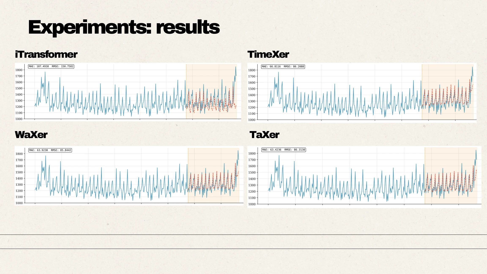

Introduction to Deep Learning · SNU · 2025
TaXer & WaXer: Forecasting Periodic Time Series
Course ProjectIntegrating periodic or dilated-convolution features into a transformer forecaster, with explicit tensor interfaces and evaluation across weather and retail time series.

- TaXer Sticker MSE
- 0.1569
- TimeXer Sticker MSE
- 0.1647
- Course project
- 2025
The design question
Can a transformer benefit from a feature extractor that explicitly captures temporal structure? The team compared TaXer, which uses TimesNet-style periodic features, with WaXer, which uses WaveNet-style dilated causal convolutions. Weather and Sticker Sales sequences provide different tests of the same integration idea.
Implementation & evidence: Project setup
Connecting two models at the right interface
TaXer detects dominant periods through FFT-based TimesNet features, then uses a learned linear projection to match the transformer’s embedding dimension. Variable-wise patch embeddings provide the endogenous sequence, while the extracted features are broadcast as cross-attention context. The encoder’s global token queries that context. This is feature-level integration, rather than averaging two independent forecasts.
Implementation & evidence: Feature extraction and projection · Cross-attention interface
An alternative temporal prior
WaXer replaces the periodic feature extractor with dilated causal convolutions while keeping the projection and transformer integration pattern. The two variants let the team compare explicit periodic structure with a convolutional receptive field. Input/output shapes and per-variable normalization are handled explicitly so forecasts can be returned at the original scale.
Implementation & evidence: WaveNet–transformer integration
Evaluation and engineering takeaway
The supplied report compares models on global weather, Korean weather, and Sticker Sales, including model-size ablations. Its main Sticker comparison reports TaXer MSE of 0.1569 versus 0.1647 for TimeXer. These are course-project results under the reported setup. The useful engineering question is how representation choice, model capacity, and inference cost interact.
Implementation & evidence: Team report
Team and materials
This SNU Introduction to Deep Learning project was completed by Donghwi Kim, Jinwoo Seo, Hyeonseop Shin, and Manyoung Han. The code, report, and presentation provide the implementation and experimental context; the work is presented as a course project.
Inside the project
